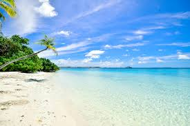
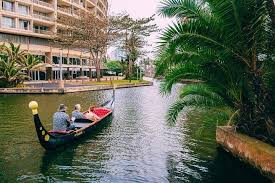
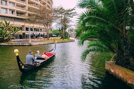

Welcome to Durban Beach – Your Ultimate Coastal Escape!
Durban Beach – A Coastal Paradise Awaits You!
Nestled along the sun-kissed shores of South Africa's vibrant coastline, Durban Beach is a paradise for sun lovers, adventure seekers, and those simply looking to unwind.
With golden sands stretching for miles, crystal-clear waters, and a vibrant mix of cultures, Durban Beach offers something for everyone.
Whether you’re surfing the waves, taking a leisurely stroll along the promenade, or enjoying the local cuisine, Durban Beach promises an unforgettable experience.
Explore the beauty and energy of this iconic destination and let the ocean breeze refresh your spirit.
Beyond its natural beauty, Durban Beach is a hub of exciting activities and attractions. From the bustling beachfront markets to world-class restaurants and entertainment spots, there’s always something happening. Explore the iconic Golden Mile, indulge in local flavors, or dive into thrilling water sports. Discover why Durban Beach is not just a destination – it's a lifestyle.
Top Activities to Do in Durban, South Africa
Relax on Durban Beachfront.
- Soak up the sun on the iconic Golden Mile, a stretch of sandy beaches perfect for sunbathing, swimming, and surfing.
- Visit uShaka Marine World:
Explore one of the largest aquariums in the Southern Hemisphere, featuring marine exhibits, a water park, and dolphin shows.
- Stroll Through Moses Mabhida Stadium:
Take a skycar ride to the top for panoramic city and ocean views or try the Big Rush Swing for an adrenaline-pumping experience.
- Explore the Durban Botanic Gardens:
Discover South Africa’s oldest botanical gardens, home to indigenous plants, exotic trees, and a serene tea garden.
- Shop at Victoria Street Market:
Experience a fusion of African and Indian cultures through local crafts, spices, textiles, and street food.
- Take a Rickshaw Ride:
Enjoy a colorful and traditional rickshaw ride along the beachfront while learning about the city’s history.
- Visit Umhlanga Rocks:
Head just north of Durban for upscale shopping, beachfront dining, and scenic coastal walks.
- Explore the Valley of a Thousand Hills:
Take a day trip to experience Zulu culture, local crafts, and breathtaking landscapes.
- Go Surfing or Kiteboarding:
Durban’s warm Indian Ocean waters and consistent waves make it a hotspot for water sports.
- Discover Durban’s Art and Culture Scene:
Visit the KwaMuhle Museum, Durban Art Gallery, and BAT Centre to explore local art, history, and contemporary culture.
- Enjoy Traditional Indian Cuisine:
Sample Durban’s famous bunny chow, a local delicacy of curry served in a hollowed-out loaf of bread.
- Take a Harbor Cruise:
Get a different perspective of Durban’s skyline with a boat cruise around the busy harbor.
- Visit the Suncoast Casino and Entertainment World:
Try your luck at the casino or catch a movie, dine, or relax at the beach club.
- Go Whale Watching:
During the migration season (June to November), take a boat tour to spot whales, dolphins, and marine life.
- Explore the Durban ICC:
Attend one of the many events, conferences, or exhibitions hosted at this world-class convention center.
Great Activities.
Durban is a great place to kick back and relax.
Come experence Durban!

 
